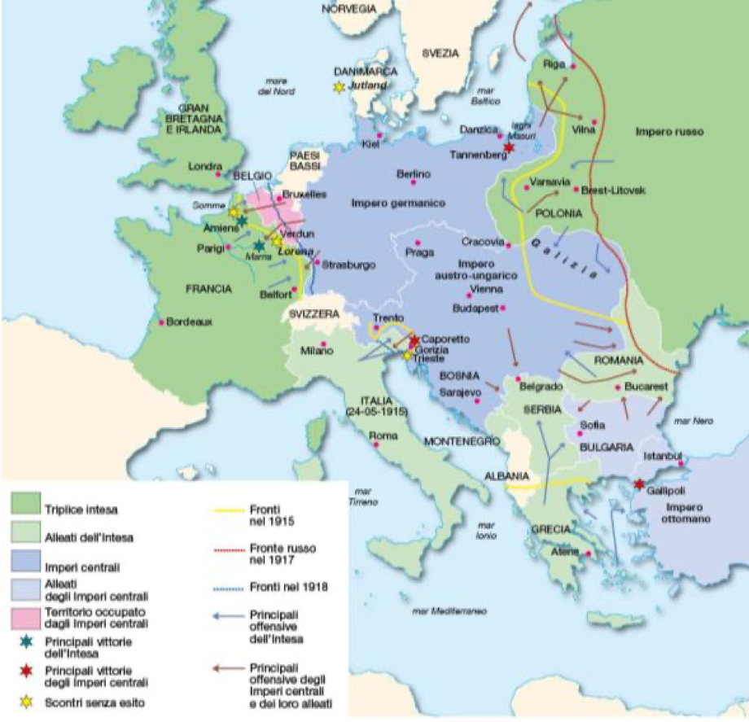
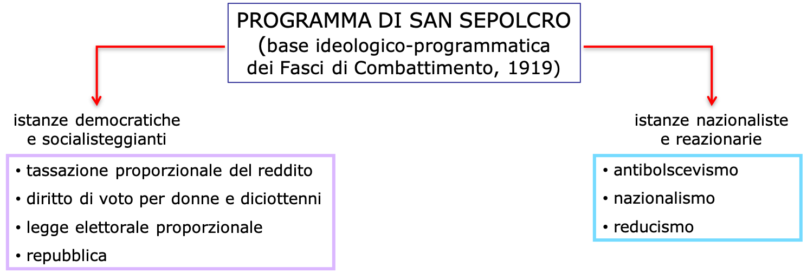

Interrogazione storia
Volume III
- Ripasso Capitolo 3:
- leggere riassunto e guardare appunti
- Capitolo 4: Prima guerra mondiale (Slides)
- studiare tutto
- Cause Prima Guerra mondiale (appunti Letizia + immagine slides)
- p. 96-97: Lo spirito del 1914 (lettura)
- Capitolo 5: Dopoguerra e avvento del fascimo (Slides)
- Capitolo 6:
- Paragrafo 1
- Politica e ideologia del Fascismo (con p. 96-99: Questa Repubblica - Zagrebelsky)
"Appunti"
- Trascrizione 31 marzo
Ripasso Capitolo 3
Davide
Unable to open file
Lucrezia
Unable to open file
Capitolo 4
1. Il mondo nella guerra generale europea
Il 28 giugno 1914 lo studente serbo Gavrilo Princip assassinò l'erede al trono asburgico Francesco Ferdinando, a Sarajevo, Serbia.
In poco più di un mese seguirono dichiarazioni di guerra che delinearono due blocchi di alleanze: la Triplice intesa, tra Gran Bretagna, Francia e Russia, e gli Imperi centrali, Germania e Austria-Ungheria:
- l'Austria lanciò un durissimo ultimatum alla Serbia
- il governo Russo, filoserbo, reagì
- la Germania lanciò un ultimatum alla Russia
- la Francia, alleata con l'Impero russo, venne chiamata in causa
- la Germania dichiarò guerra alla Russia e alla Francia
- la Germania attacca la Francia invadendo il Belgio
- la Gran Bretagna entra nel conflitto, a difesa del Belgio.
- successivamente il Giappone si schiererà con l'Intesa e l'Impero ottomano con gli Imperi centrali
Le potenze europee si trovarono proiettate in una gerra generale di cui nessuno poteva immaginare le proporzioni e gli esiti.
Cause economiche
La Gran Bretagna aveva perso gran parte del primato economico maturato nel corso dell'Ottocento, e il suo impero non era più l'unico ad avere scala planetaria, proprio a causa dell'espansione dell'economia tedesca.
Le conseguenze del progressivo assottigliamento delle distanze tra la Gran Bretagna e le altre potenze avevano un aspetto anche geopolitico: il primato inglese era stato il principale elemento di equilibrio dell'ordine mondiale: la "pax britannica" aveva garantito alla Gran Bretagna una politica estera basata sull'isolamento rispetto agli scontri degli altri stati europei.
Tra la fine dell'Ottocento e il 1914, il miglioramento generalizzato delle condizioni di vita aveva consentito alle potenze industriali di incrementare la produzione: si produceva più di quanto le economie nazionali avrebbero potuto assorbire.
Era necessario quindi trovare sbocchi per i propri beni: Francia e Gran Bretagna affrontarono la questione creando una imponente rete commerciale difesa dagli eserciti coloniali, mentre Austria, Russia e Germania non riuscirono a fare altrettanto e scaricarono all'interno dell'Europa la spinta all'espansione dei propri mercati per sostenere la crescita industriale.
Ma dal 1908 iniziò a delinearsi una inversione di tendenza: la crescita del Pil cominciò a rallentare, facendo riemergere lo spettro della sovrapproduzione. Lo scontro per il controllo dei mercati da economico si trasformò in militare.
Cause politiche
Il crollo dell'equilibrio creato da Bismarck, volto ad isolare la Francia in quanto nemico della Germania, porta al sistema di alleanze che causerà l'effetto domino.
Gli Imperi centrali utilizzarono l'attentato di Sarajevo come occasione per aprire un conflitto col quale ridefinire i rapporti di forza nel continente. Per l'Austria si trattava di estendere il controllo sui Balcani, ma per la Germania l'obiettivo era di diventare una potenza economica e politica mondiale, contendendo questo ruolo alla Gran Bretagna.
Nasce quindi il progetto di una Grande Germania, portato avanti da Guglielmo II, una potenza planetaria capace di allargarsi verso l'Europa orientale
Le dichiarazioni di guerra vennero votate all'unanimità dai parlamenti, coinvolgendo nel furore bellicista anche i partiti socialisti. Naufragarono quindi le speranze di quanti confidavano in un'azione della Seconda internazionale per fermare la guerra
Inoltre vi è sempre stata una tensione tra Francia e Germania, a causa delle regioni della Alsazia e della Lorena, contese fin dalla guerra Franco Prussiana, e che al momento erano sotto il dominio tedesco.
La tensione tra Francia e Germania sfociò due volte, negli anni precedenti alla guerra, in due crisi marocchine
- la prima, del 1905, è la Crisi di Tangeri: la Germania esprime la sua posizione forte a favore dell'indipendenza del Marocco, e dopo un periodo di tensione viene isolata
- la seconda, del 1911, è la Crisi di Agarid:
- la Germania porta la sua flotta davanti ad Agadir, per fare pressione sulla Francia;
- la Gran Bretagna interpreta questo gesto come un tentativo di conquista di Agadir;
- dopo aspre trattative la Germania riconobbe la supremazia francese sul Marocco, che resta diviso tra Francia e Spagna.
Inoltre, l'area Balcanica era sempre stata occupata fin dal 1453 dagli Ottomani: sia la Russia, che la Germania che l'Austria vogliono occupare l'area, visto lo sbocco sul mediterraneo.
Cause culturali
Nei Balcani si sviluppò, vista la grande frammentazione e il grande senso di oppressione, un sentimento di panslavismo, che voleva gli stati slavi uniti sotto l'egida della Russia.
Molte figure influenti della cultura tedesca, con i loro studi, contribuirono a costruire l'ordito culturale del pangermanismo, ovvero il destino di potenza planetaria della Germania.
La guerra dipese anche da un clima culturale che aveva aggregato consensi crescenti intorno ad alcune mitologie collettive: l'esaltazione della forza e il disprezzo della pace.
La battaglia culturale ingaggiata dai nazionalisti alla fine dell'Ottocento contro la liberal-democrazia e il socialismo, in nome dell'imperialismo, del razzismo e dell'antipacifismo, aveva fatto breccia nella mentalità collettiva.
Il nazionalismo non è più solo amore per la patria, ma è una forma violenta, che mira ad invadere le altre nazioni: l'alta borghesia pensa che la guerra sia il modo per l'affermazione della classe.
Il razzismo, spesso individuato dall'antisemitismo, fa leva sul senso di appartenenza delle persone: si addossa agli ebrei la colpa delle crisi economiche e finanziarie dei paesi europei.
In un'epoca di suffragio universale, il consenso delle masse era fondamentale; di qui l'importanza che giornali, opuscoli e manifesti assunsero nella vita collettiva di tutti questi anni.
Dalla fine dell'età Napoleonica l'Europa aveva vissuto in pace, e questo rendeva l'esperienza bellica un avvenimento nuovo ed eccitante, nelq uale molti giovani videro una sorta di riscatto da un'esistenza piccolo-borghese comoda ma grigia, per dimostrare il proprio valore
Inoltre, il fallimento della scienza newtoniana, porto ad una sfiducia e ad una crisi della scienza in quanto tale, portando tendenze irrazionaliste tra gli intellettuali.
In Italia vi era un forte sentimento di irredentismo, nei confronti dei territori di Trieste e della Dalmazia.
Un movimento che si contraddistinse per la sua componente bellica fu il futurismo
Il manifesto del futurismo
- Noi vogliamo cantare l’amor del pericolo, l’abitudine all’energia e alla temerità.
- Il coraggio, l’audacia, la ribellione, saranno elementi essenziali della nostra poesia.
- La letteratura esaltò fino ad oggi l’immobilità pensosa, l’estasi e il sonno. Noi vogliamo esaltare il movimento aggressivo, l’insonnia febbrile, il passo di corsa, il salto mortale, lo schiaffo ed il pugno.
- Noi affermiamo che la magnificenza del mondo si è arricchita di una bellezza nuova: la bellezza della velocità. Un automobile da corsa col suo cofano adorno di grossi tubi simili a serpenti dall’alito esplosivo... un automobile ruggente, che sembra correre sulla mitraglia, è più bello della Vittoria di Samotracia.
- Noi vogliamo inneggiare all’uomo che tiene il volante, la cui asta ideale attraversa la Terra, lanciata a corsa, essa pure, sul circuito della sua orbita.
- Bisogna che il poeta si prodighi, con ardore, sfarzo e munificenza, per aumentare l’entusiasti-co fervore degli elementi primordiali.
- Non v’è più bellezza, se non nella lotta. Nessuna opera che non abbia un carattere aggressivo può essere un capolavoro. La poesia deve essere concepita come un violento assalto contro le forze ignote, per ridurle a prostrarsi davanti all’uomo.
- Noi siamo sul promontorio estremo dei secoli!...Perché dovremmo guardarci alle spalle, se vogliamo sfondare le misteriose porte dell’Impossibile? Il Tempo e lo Spazio morirono ieri. Noi viviamo già nell’assoluto, poiché abbiamo già creata l’eterna velocità onnipresente
- Noi vogliamo glorificare la guerra – sola igiene del mondo – il militarismo, il patriottismo, il gesto distruttore dei libertari,6le belle idee per cui si muore e il disprezzo della donna.
- Noi vogliamo distruggere i musei, le biblioteche, le accademie d’ogni specie, e combattere contro il moralismo, il femminismo e contro ogni viltà opportunistica o utilitaria.
- Noi canteremo le grandi folle agitate dal lavoro, dal piacere o dalla sommossa: canteremo le maree multicolori e polifoniche delle rivoluzioni nelle capitali moderne, canteremo il vibrante fervore notturno degli arsenali e dei cantieri incendiati da violente lune elettriche, le stazioni ingorde, divoratrici di serpi che fumano, le officine appese alle nuvole pei contorti fili dei loro fumi; i ponti simili a ginnasti giganti che scavalcano i fiumi, balenanti al sole con un luccichio di coltelli; i piroscafi avventurosi che fiutano l’orizzonte, le locomotive dall’ampio petto, che scalpitano sulle rotaie, come enormi cavalli d’acciaio imbrigliati di tubi, e il volo scivolante degli aeroplani, la cui elica garrisce al vento come una bandiera e sembra applaudire come una folla entusiasta
Il bombardamento di Adrianopoli
Cause sociali
Il mito della Grande Germania non era il sogno di un imperatore visionario, ma esprimeva gli interessi della nuova borghesia industriale e finanziaria tedesca.
Era nata la società di massa, che porta ad eserciti di massa, che, per mezzo della leva obbligatoria, sono strumento di omogenizzazione della società, plasmandola verso valori bellici.
Cause militari
Lo scoppio della guerra appare anche come conseguenza del processo della corsa agli armamenti.
Questo fenomeno era evidente soprattutto in Germania, dove il militarismo costituiva da un lato il collante ideologico della politica di potenza di Guglielmo II, dall'altro la concreta merce di scambio con il mondo dell'alta finanza e della grande impresa.
Nel campo della marina militare, il governo tedesco decise di competere con la Gran Bretagna: nel 1912 la flotta militare tedesca era seconda per tonnellaggio solo a quella britannica.
Parallelamente il governo di Londra potenziava l'esercito di terra, nell'eventualità di doversi confrontare con quello della Germania. Questa decisione dipese anche da un'esplicita richiesta della Francia, a sua volta impegnata nel rafforzamento dell'esercito in funzione antitedesca.
Nel quindicennio che precedette la guerra le spese militari aumentarono del 50% su scala continentale.

2. I fronti di guerra
Piccola cronologia

Gli schieramenti
| Intesa | Imperi centrali |
|---|---|
| Gran Bretagna | Germania |
| Francia | Impero austro-ungarico |
| Russia | |
| & | & |
| Italia | Impero ottomano |
| Stati Uniti | Bulgaria |
| Giappone | |
| altri 17 stati minori |
I fronti della Grande guerra
La Prima guerra mondiale si combatté, a livello europeo, su quattro fronti principali.
- Il fronte orientale si sviluppava dalle rive del mar Nero a quelle del mar Baltico.
- Il fronte occidentale seguiva all’incirca gli odierni confini francesi con Germania, Belgio e Lussemburgo.
- Il fronte italiano comprendeva una linea che andava dalle Alpi Trentine alla Venezia Giulia e al mar Adriatico.
- Il fronte balcanico seguiva la frontiera greca a ridosso dei territori della Bulgaria della Serbia.

Le caratteristiche della Guerra
- da guerra-lampo diventa una lunga e logorante guerra di trincea
- impiego di nuovi armamenti fra cui carri armati, i primi aerei, gas asfissianti
- coinvolge l’intero sistema produttivo dei vari paesi
- coinvolge tutta la popolazione; impone l’impiego di manodopera femminile nelle fabbriche e nei servizi
- mette in atto un ampio sistema di propaganda
3. L'Italia in guerra
La posizione dell'Italia

5. Il 1917: guerra e rivoluzione
Appunti Lucrezia
Ingresso degli USA (1917)
Avevano delle valide ragioni, il presidente democratico Wilson, volevano sostenere i paesi che avevano governi liberal democratici. In più, avevano già prestato soldi ai paesi dell’intesa, soprattutto alla UK, se avessero perso non li avrebbero ridati.
La Germania dichiara guerra marina aperta, qualsiasi imbarcazione che entrasse a contatto con una nave tedesca sarebbe stata affondata. Il loro ingresso in guerra fu molto lento.
Il 1917 vede quindi l’uscita della Russia e l’entrata degli USA. In Italia i lavoratori sono tenuti in condizioni disumane, le retribuzioni sono scarse e soprattutto, furono stremati col lavoro. Questo portò ad un grande sciopero, anche questa volta finita nel sangue. In quest’anno si risente la voce di coloro che fin dall’inizio erano stati contrari alla guerra, essi ribadiscono la necessità di una guerra in neutralità, senza vinti o vincitori. Il Papa invita tutti i paesi in guerra ad uscire dal conflitto, da lui definito inutile.
In Francia fu sostituito il capo delle forze armate con il generale Petain*. Le industrie, la società e lo stato vengono militarizzate.
L’uscita in guerra della Russia, iniziata nell’ottobre con , aveva permesso ai tedeschi di distogliere le truppe impegnate in Russia, impegnandole nel fronte occidentale, aumentando la forza austriaca.
La disfatta a Caporetto fu devastante per il morale dell’Italia, viene sostituito anche il generale con un nuovo capo si stato maggiore Diaz, molto più permissivo e comprensivo verso la situazione dei soldati.
Sia le truppe tedesche nella battaglia di Amien, sconfitte dalle truppe anglo statunitensi, e le truppe austriache sconfitte nella battaglia di Vittorio Veneto, sono agli stremi.
Quando si parla delle trattative di pace ci si riferisce a Versaille, non vengono risolte però tutte le questioni territoriali in un solo incontro, questa fu una guida generale, poi solo con dei trattati minori vengono discusse tutte le altre questioni.
I grandi imperi, Asburgico, Russo, ottomano e Tedesco* cadono con questa guerra.
Pace Cartaginese, si usa per quando i vincitori fanno valere la loro voce infliggendo forti umiliazioni e richieste economiche. Oltre a dover ridare l’Alsazia e la Lorena, e i possedimenti coloniali, dovette pagare ingenti debiti di guerra.
Il presidente americano Wilson promosse un documento in 14 punti, importanti per dare le indicazioni per la mentalità da utilizzare per trattare la pace
- Rifiuto vecchia diplomazia segreta: tutto deve sempre essere alla luce del sole, reso ufficiale. Questa poca chiarezza portò a forti malcontenti nel popolo, come il caso di Fiume per gli italiani.
- Pubblicità dei trattati
• Difesa libertà di commercio e abolizione di barriere doganali - Diritto di autodeterminazione dei popoli: questo causò un ritorno della volontà di certi paesi di ricercare un’autonomia statale.
Nelle elezioni del 21, salì un repubblicano, i repubblicani decisero di non rimanere all’interno della Società delle Nazioni, un precursore dell’ONU.
Il ruolo degli USA: i 14 punti di Wilson
6 aprile 1917: ingresso in guerra degli Stati Uniti
La sua politica si basava su:
- rifiuto vecchia diplomazia segreta
- pubblicità dei trattati
- difesa libertà di commercio e abolizione barriere doganali
- proclamazione del diritto di autodeterminazione dei popoli
Le tappe salienti della Grande Guerra
1914
- Attentato di Sarajevo (28 giugno)
- L’Austria dichiara guerra alla Serbia (28 luglio)
- La Gran Bretagna dichiara guerra alla Germania (4 agosto)
- Il Giappone entra in guerra al fianco della Gran Bretagna (23 agosto)
- L’Impero ottomano si schiera con gli imperi centrali (fine ottobre)
- Attentato di Sarajevo (28 giugno)
- L’Austria dichiara guerra alla Serbia (28 luglio)
- La Gran Bretagna dichiara guerra alla Germania (4 agosto)
- Il Giappone entra in guerra al fianco della Gran Bretagna (23 agosto)
- L’Impero ottomano si schiera con gli imperi centrali (fine ottobre)
1915
- Patto di Londra fra Italia e Intesa (26 aprile)
- Gli Stati Uniti stanziano un prestito di 500 milioni di dollari a favore di Gran Bretagna e Francia
- Entrata in guerra dell’Italia a fianco dell’Intesa (24 maggio)
- I tedeschi sfondano il fronte russo (febbraio)
- Inizia la guerra sottomarina (febbraio)
- L’Italia attacca sull’Isonzo (giugno)
- Vana offensiva francese nella Champagne (settembre)
1916
- Accordo Sykes-Picot per la divisione dell’Impero ottomano (16 maggio)
- Prime proposte di pace tedesche (dicembre)
- Lo stato maggiore austriaco pianifica la Strafexpedition contro l’Italia
- Offensiva tedesca su Verdun (21 febbraio)
- Battaglia navale dello Jutland (31 maggio)
- Controffensiva russa (giugno)
- Offensiva anglo-francese sulla Somme (luglio-ottobre)
- Conquista italiana di Gorizia (agosto)
- Strafexpedition (maggio)
1917
- Iniziano i movimenti rivoluzionari in Russia (febbraio)
- Gli Stati Uniti entrano in guerra (6 aprile)
- Appello di Benedetto XV ai belligeranti per porre fine all’inutile strage (1 agosto)
- Vittoria in Russia della rivoluzione bolscevica (ottobre-novembre)
- La Germania attua una guerra sottomarina illimitata (febbraio)
- Sfondamento delle linee italiane a Caporetto (24 ottobre)
1918
- Accordi di Brest-Litovsk (3 marzo)
- Armistizio di Rethondes (11 novembre)
- Nascono la Repubblica tedesca e quella austriaca (novembre)
- Inizio guerre per l’indipendenza di Estonia, Lettonia e Lituania
- Offensiva tedesca sul fronte occidentale (marzo)
- Grande controffensiva dell’Intesa (luglio-settembre)
- Resa
- bulgara (29 settembre),
- turca (30 ottobre),
- austriaca (4 novembre),
- tedesca (11 novembre - Rethondes)
6. La fine del conflitto


Capitolo 5
1. I dilemmi della pace
Appunti Lucrezia
Dopo la conversione delle fabbriche per sostenere le richieste belliche, molte persone perdono lavoro, dopo la guerra la gente arriva in patria mutilate e molte volte con l’impossibilità di lavorare.
In Italia è molto forte il fenomeno dell’emigrazione, principalmente verso l’Europa del Nord, e verso l’America. Questo era iniziato già prima della prima guerra mondiale, dopo il 18 aumenterà però di dimensioni.
In questa situazione econimica devastante, si insinua il problema della vittoria mutilata, all’Italia infatti, dopo essere entrata a fianco dell’intesa, vennero promesse terre, comprese le terre irredente, il simbolo di questo scontento è Fiume.
Una difficile situazione economica


La Vittoria Mutilata

4. La crisi dello stato liberale in Italia
Appunti Lucrezia
Biennio Rosso
Giolitti continua a sostenere la neutralità dello stato, cercando di evitare conflitti gravi, controllando quindi con le forze dell’ordine, ma mai con il pugno di ferro. Così finisce però per scontentare tutti. I capitalisti hanno paura che succeda come in Russia, i lavoratori non si sentono difesi.
Nel 1919 nasce il movimento dei “fasci di combattimento” risente da un lato delle origini socialiste di Mussolini, aveva quindi delle basi socialiste e democratiche, ne è un esempio le tasse misurate in base al reddito, come anche la proposta del diritto di voto alle donne maggiorenni, legge elettorale proporzionali, ed un nuovo sistema politico, la Repubblica.
Era un nazionalista, antiboscevico, istanze nazionaliste e reazionarie. Mussolini presenta un programma che unisce bene o meno tutti, ma soprattutto, a sua figura aveva una grande forza, agli occhi della gente era una figura stabile. Usa delle forze armate, che agiscono in teoria, contro coloro che causano disordini e scioperi. La colpa di Giolitti in quel biennio fu di lasciar agire queste camice nere.

L'ultimo Giolitti: il compromesso impossibile

Le origini del Fascismo
«Noi ci permettiamo di essere aristocratici e democratici, conservatori e progressisti, reazionari e rivoluzionari, legalisti e illegalisti, a seconda elle circostanze di tempo, di luogo e di ambiente…»
-- Benito Mussolini

Il Fascismo agrario
G. Matteotti, intervento parlamentare 10 marzo 1921
«Mentre i galantuomini sono nelle loro case a dormire, arrivano i camion di fascisti nei paeselli, nelle campagne, nelle frazioni composte di poche centinaia di abitanti; arrivano accompagnati naturalmente dai capi dell’agraria locale, sempre guidati da essi, perché altrimenti non sarebbe possibile conoscere nell’oscurità in mezzo alla campagna sperduta la casetta del capolega o il povero miserello ufficio di collocamento, si presentano davanti alla casetta e si sente l’ordine: "Circondate a casa!“ Sono venti, sono cento persone armate di fucili e rivoltelle. S chiama il capolega e gli si intima di scendere; se il capolega non discende, gli si dice: "Se non scendi ti bruciamo la casa, tua moglie tuoi figlioli". Il capolega discende: se apre la porta lo pigliano, l egano, lo portano sul camion, gli fanno passare le torture più inenarrabili, fingendo di ammazzarlo, di annegarlo, poi lo abbandonano in mezzo alla campagna, nudo, legato a un albero. Se il capolega oo di fegato e non apre e adopera le armi per la sua difesa, alr è l’assassinio immediato che si consuma nel cuore della notte. Cento contro uno. Questo è il sistema nel Polesine.»
La crescita del Fascismo
Primavera 1919 - Estate 1920
- squadrismo urbano di matrice futurista e arditista
- azioni isolate contro obiettivi simbolici del socialismo
Autunno 1920 - Elezioni maggio 1921
- sviluppo dello squadrismo agrario
- l’epicentro è Bologna, capitale simbolica e politica del socialismo
Primavera 1921 - Estate 1921
- forte crescita numerica dello squadrismo e delle violenze
- si passa dalle spedizioni punitive locali ad azioni a più ampio raggio
- scarsa o nulla reazione dello stato
- debolissima resistenza dei socialisti
Novembre 1921 - Ottobre 1922: Fondazione Pnf
- completa distruzione delle organizzazioni "rosse" e violenza anche contro quelle "bianche"
- squadrismo come movimento di massa
- occupazione militare dei centri urbani (Ferrara, Ravenna, Bolzano, Trento)
- marcia su Roma
Dai fasci al Pnf
- Marzo 1919: Fasci da combattimento:
- arditi
- nazionalisti
- antibolscevichi
- socialisti rivoluzionari
- Squadrismo
- Novembre 1921: Partito Nazionale Fascista
- programma nazionalista e conservatore
- accreditamento come interlocutore affidabile presso le classi dirigenti
- controllare e disciplinare il fascismo "intransigente" che mette in discussione la leadership di Mussolini
Il discorso del Bivacco
Il 28 ottobre c'è la Marcia su Roma e il 30 ottobre il Re incarica Mussolini di formare il governo
16 novembre 1922: Benito Mussolini, Il discorso del Bivacco
«Mi sono rifiutato di stravincere e potevo stravincere. Mi sono imposto dei limiti. Mi sono detto che la migliore saggezza è quella che non vi abbandona dopo la vittoria. Con 300.000 giovani armati di tutto punto, decisi a tutto e quasi misticamente pronti a un mio ordine, io potevo castigare tutti coloro che hanno diffamato e tentato di infangare il Fascismo. Potevo fare di quest’aula sorda e grigia un bivacco di manipoli; potevo sprangare il Parlamento e costruire un Governo esclusivamente di fascisti. Potevo; ma non ho, almeno in questo primo tempo voluto. […] Ho costituito un governo di coalizione e non già con l’intento di avere una maggioranza parlamentare, della quale oggi posso fare benissimo a meno, ma per raccogliere in aiuto della nazione boccheggiante quanti, al di sopra delle sfumature dei partiti, la stessa nazione vogliono salvare. Io non voglio, finché mi sarà possibile, governare contro la Camera; ma la Camera deve sentire la sua particolare posizione che la rende passibile di scioglimento fra due giorni o fra due anni.»